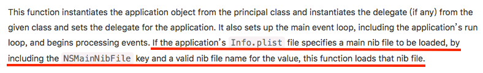
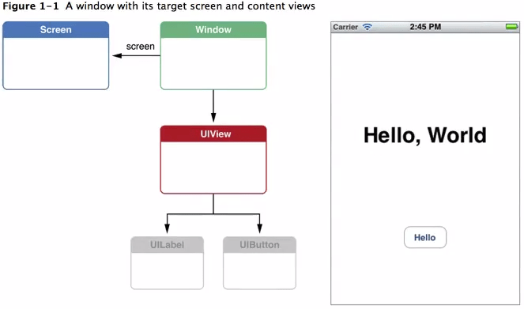
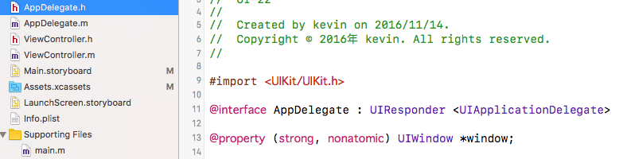
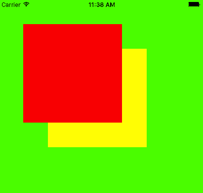
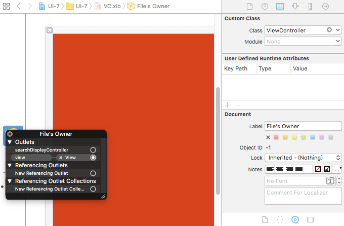

iOS程序启动过程，视图加载UIWindow与ViewController
这篇文章发布于 2016/11/01，归类于 iOS
标签：
UIWindow，ViewController，代码手动加载storyboard，代码加载xib，iOS启动过程
初步了解了iOS程序的启动过程、UIApplication和AppDelegate后，就要开始步入正题了，界面的显示问题。开启主运行循环后，会看Info.plist文件是否指定了main storyboard，有则加载。加载storyboard会创建UIWindow对象，再将默认的ViewController设置为该window的根控制器，然后将ViewController的view可视化。

程序启动过程延伸
main函数执行UIApplicationMain():
- 创建UIApplication对象
- 创建代理对象，设置为UIApplication的代理
- 开启事件循环
- 加载Info.plist文件，如果指定了Main, 就去加载
默认是指定了Main storyboard的. Main Storyboard的初始化过程
- It instantiates a window for you. // 实例化一个window
- It loads the main storyboard and instantiates its initial view controller.
- It assigns the new view controller to the window's rootViewController property and then makes the window visible on the screen.
UIWindow
它是一种特殊的UIView，一个app中至少会有一个UIWindow。
iOS程序启动完毕后，创建的第一个视图控件就是UIWindow，接着创建控制器的view，最后将view添加到UIWindow上，于是控制器的view就显示到屏幕上了。
没有UIWindow，就看不到任何UI界面
A UIScreen object that identifies a physical screen connected to the device. A UIWindow object that provides drawing support fot the screen. A set of UIView objects to perform the drawing. These objects are attached to the window and draw their contents when the window asks them to.

不指定Main storyboard, 自己初始化window
在代理AppDelegate.m里，程序启动完成后调用:
// 1.实例化一个window(创建窗口对象) 注意点:1.不能是局部变量 2.必须设置窗口的尺寸
_window = [[UIWindow alloc] initWithFrame:[UIScreen mainScreen].bounds];
// _window.backgroundColor = [UIColor redColor];
// 2.创建窗口的根控制器, 并赋值
// 对应界面的事情，交给对应的控制器管理
UIViewController* rootVc = [[UIViewController alloc] init];
rootVc.view.backgroundColor = [UIColor greenColor];
UIButton* btn = [UIButton buttonWithType: UIButtonTypeContactAdd];
btn.center = CGPointMake(50, 50);
[rootVc.view addSubview:btn];
// 一旦设置窗口的根控制器，就会把根控制器的view添加到窗口
_window.rootViewController = rootVc;
// 3.显示窗口 显示窗口_window.hidden = NO;成为主窗口application.keyWindow = _window;
[_window makeKeyAndVisible];
多个窗口与层级
// 1.创建窗口
_window = [[UIWindow alloc] initWithFrame:[UIScreen mainScreen].bounds];
_window.backgroundColor = [UIColor greenColor];
// 2.设置窗口的根控制器
UIViewController* rootVc = [[UIViewController alloc] init];
_window.rootViewController = rootVc;
// 3.显示窗口
[_window makeKeyAndVisible];
// 创建第二个窗口
_window1 = [[UIWindow alloc] initWithFrame:CGRectMake(50, 50, 200, 200)];
_window1.backgroundColor = [UIColor redColor];
UIViewController* rootVc1 = [[UIViewController alloc] init];
_window1.rootViewController = rootVc1;
_window1.hidden = NO;
_window1.windowLevel = UIWindowLevelAlert+1;
// 创建第3个窗口
_window2 = [[UIWindow alloc] initWithFrame:CGRectMake(100, 100, 200, 200)];
_window2.backgroundColor = [UIColor yellowColor];
UIViewController* rootVc2 = [[UIViewController alloc] init];
_window2.rootViewController = rootVc2;
_window2.hidden = NO;
_window2.windowLevel = UIWindowLevelAlert;
NSLog(@"%@", application.windows);
手动加载默认的storyboard，通过storyboard创建控制器
// 1.创建window
_window = [[UIWindow alloc] initWithFrame:[UIScreen mainScreen].bounds];
// 2.加载main.storyboard, 创建mian.storyboard描述的控制器
// UIStoryboard专门用来加载storyboard
UIStoryboard* storyboard = [UIStoryboard storyboardWithName:@"Main" bundle:nil];
// 加载storyboard描述的控制器，默认会加载箭头指向的viewController
UIViewController* vc = [storyboard instantiateInitialViewController];
_window.rootViewController = vc;
// 3.显示窗口
[_window makeKeyAndVisible];通过xib创建控制器
// xib加载控制器步骤，有view去描述控制器，让xib和控制器产生联系，告诉xib是用来描述一个控制器的
- (BOOL)application:(UIApplication *)application didFinishLaunchingWithOptions:(NSDictionary *)launchOptions {
// Override point for customization after application launch.
// 为什么通过xib或者storyboard
_window = [[UIWindow alloc] initWithFrame:[UIScreen mainScreen].bounds];
UIViewController* vc = [[ViewController alloc] initWithNibName:@"VC" bundle:nil];
_window.rootViewController = vc;
[_window makeKeyAndVisible];
return YES;
}VC.xib 相关设置:
